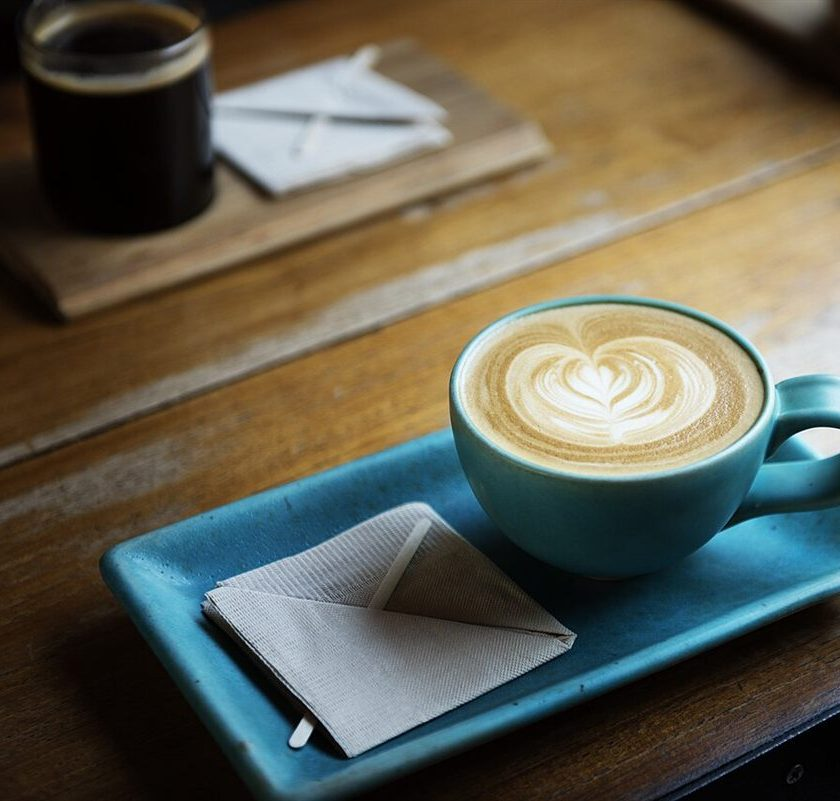
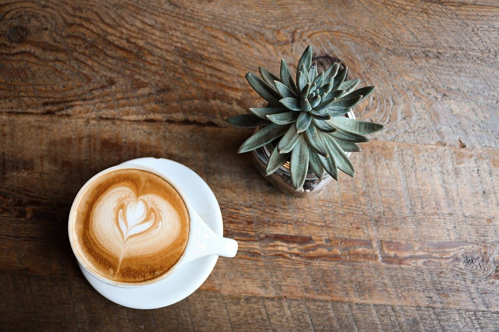
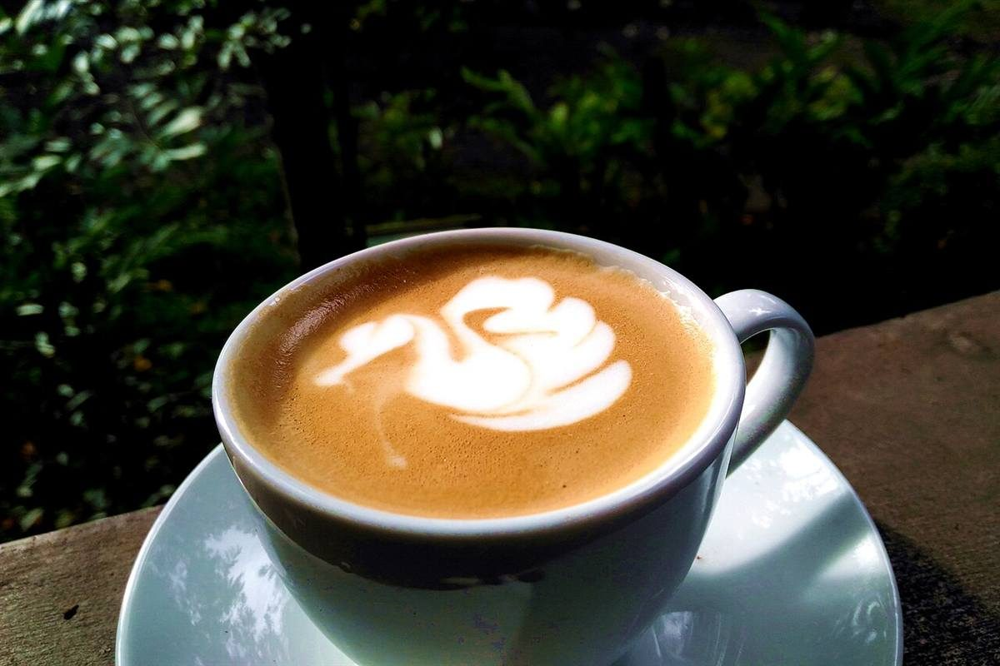
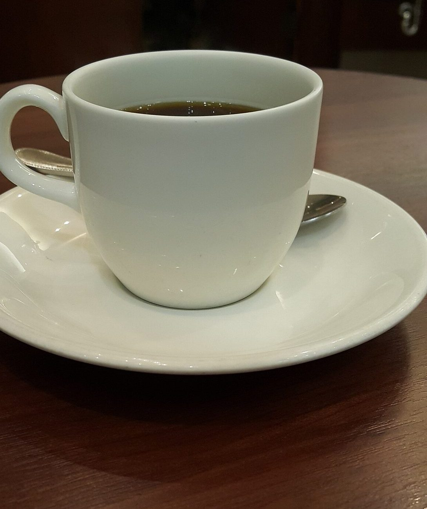

掲載の写真はフリー素材のイメージで、店舗の実際の様子ではありません。日本国内とは限らず、他の地域で撮影されたものや撮影地が不明のものを含みます。


店舗情報
| 営業時間 | 準備中(お問い合わせください) |
|---|---|
| 定休日 | 準備中(お問い合わせください) |
| 料金 | 準備中(お問い合わせください) |
| 電話 | 090-4719-7541 |
| 住所 | 福岡県柳川市大和町明野1690-3 |
| @caffe_panda |

写真はイメージです

白と黒、ひとやすみ
店名の響きから白と黒の対比を連想し、配色とデザインで表した、制作側の案です。
店名の由来や、お店の想いを示すものではありません。
実際のお店の考えや内容は、お電話またはInstagramでご確認ください。